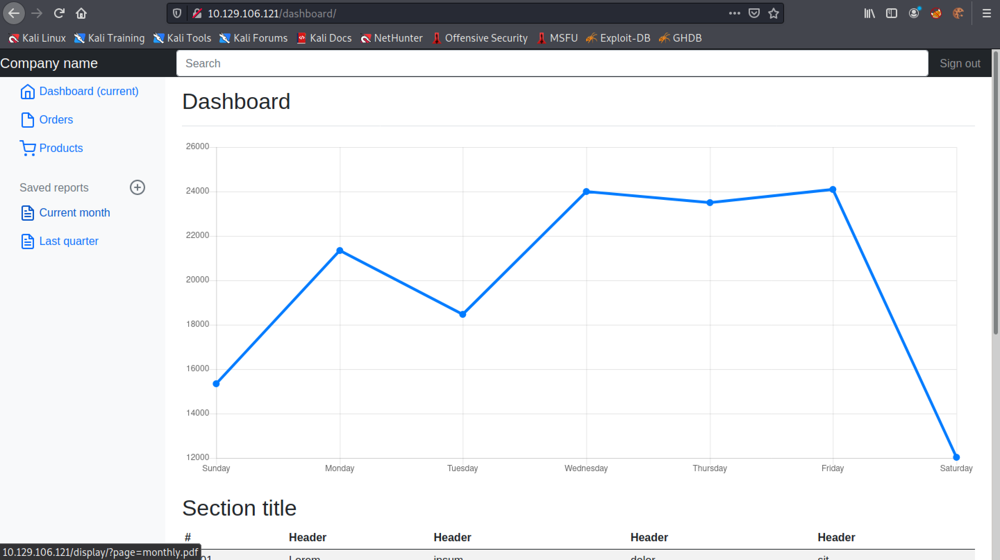

June 22, 2022
In this tutorial, we will see how to bypass a web application filter and perform directory traversal. We will be using the unicode character "%ef%bc%8f" which translates to "/" in ASCII. The target performs normalization after the payload bypasses the WAF, therefore, allowing us to bypass the filter and perform directory traversal attack.
This and this page contains more information about this attack.
This is the main page of the web application. It has links to a monthly and a quarterly report.
Trying to download the monthly report returns this page.
The same page is returned when trying to access the quarterly report.
Let's try to see if we can read the "/etc/passwd" file.
It redirects us to the "/filenotfound" page. The text says that a lot of input filtering is performed on the website.
Let's try to access some page that we are sure doesn't exist.
If a page doesn't exist, the text on the page says "Not Found".
Trying to access the '/etc/passwd' file preceded by a bunch of '../' results in the same output that says a lot of input filtering is performed.
This page contains some interesting unicode characters that we can use to bypass web application filters.
Let's try to perform the directory traversal attack once more and catch the request in Burp Intercept.
Now change the "/" characters with their equivalent unicode ones "%ef%bc%8f".
The response shows the contents of the /etc/passwd file.
We can also use curl to read local files on the target.
It shows a simple Python script that can be used to read the contents of the /etc/passwd file.
The script is modified to take the filename from the user.
I have modified the script even further to print out the filename if the file exists and copy the contents of the file into a directory called "files".
Trying to read the /etc/passwd file works.
Let's change into the "files" directory. We can see that the /etc/passwd file has been copied into this directory.
Trying to access a file that doesn't exist won't save anything to disk.
This page contains a bunch of common linux filenames to perform LFI/RFI attacks.
Running the Python script with the payloads file in a Bash script returns the files that are present on the target.
We can see that the files that were found have been copied to the "files" directory.
This is another script in Python that allows us to retrieve the contents of the remote file by prompting us for the filename. This script uses the "cmd" Python module.
We can see that it was able to read the contents of /etc/lsb-release.
If you liked reading this article, you can follow me on Twitter: mujtabareads.